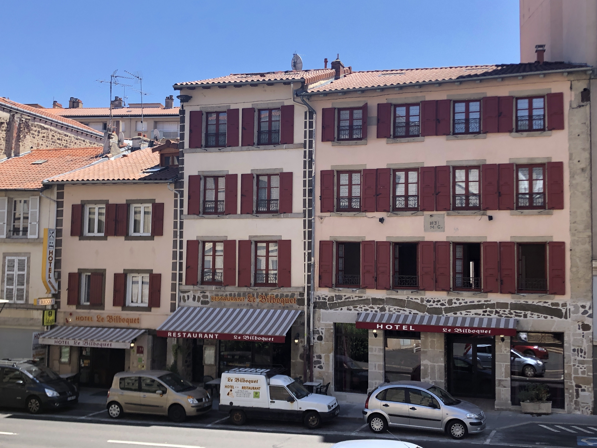
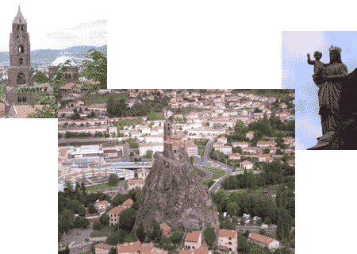

HOTEL ** RESTAURANT
LE BILBOQUET
LE BILBOQUET
")
, Internet WiFi gratuit, soirée étape, parking, chambres familles (Le Puy-en-Velay, Haute-Loire, 43)")

HOTEL
Located in the city, 5 minutes from the train station, and 10 minutes from the city center, Hotel LE BILBOQUET consists of 24 rustic rooms, equipped with modern comfort :
- Bath, WC, Hair dryer, magnifying mirror
- Flat screen TV with TNT receiver, Canal satellite, Canal +
- Telephone, free WiFi Internet access in all rooms
- Bath, WC, Hair dryer, magnifying mirror
- Flat screen TV with TNT receiver, Canal satellite, Canal +
- Telephone, free WiFi Internet access in all rooms


Our rooms are air-conditioned and some, quiet courtyard side, have a balcony.
Parking in the street is easy. You will also be offered a place in a closed parking, or better, a closed individual garage which rental by the week is possible (ideal for walkers!)
Parking in the street is easy. You will also be offered a place in a closed parking, or better, a closed individual garage which rental by the week is possible (ideal for walkers!)